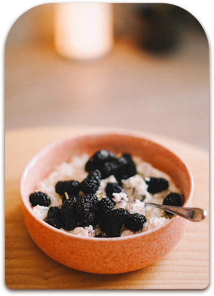
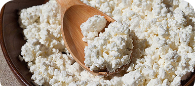
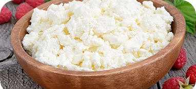
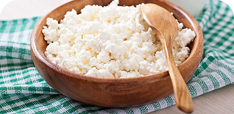

Свежий, нежный, приготовленный из отборного молока. Такой же честный и натуральный, каким его знали наши бабушки.


Как простой молочный продукт стал частью русской культуры.

От нежно зернёного до насыщенного классического.

Белок, кальций и только натуральный состав каждый день.